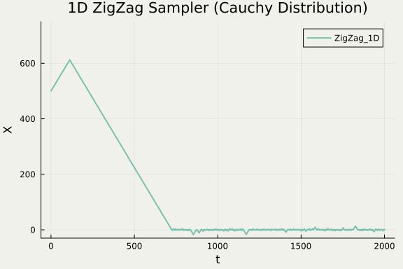
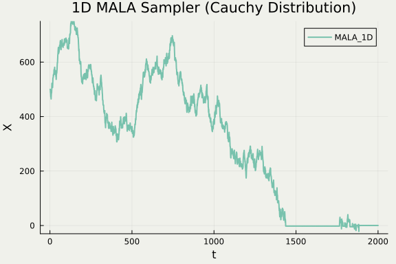

1 Zig-Zag サンプラー
A Blog Entry on Bayesian Computation by an Applied Mathematician
$$
$$
1.1 他手法との違い：非対称なダイナミクス
標準 Cauchy 分布 f(x)=\frac{1}{\pi\sigma}\frac{1}{1+\left(\frac{x-\mu}{\sigma}\right)^2} に対して：


1.2 t-分布に対する収束レート
自由度 \nu の t-分布 \mathrm{t}(\nu) に対して，
Zig-Zag Sampler (Vasdekis and Roberts, 2022) \left\|P^t\left((x,\theta),-\right)-\mathrm{t}(\nu)\right\|_\mathrm{TV}\le\frac{C_1V_1(x)}{t^k},\qquad k<\nu.
Metropolis-adjusted Langevin Algorithm (Jarner and Tweedie, 2003) \left\|P^t\left(x,-\right)-\mathrm{t}(\nu)\right\|_\mathrm{TV}\le\frac{C_2V_2(x)}{t^k},\qquad k<\frac{\nu}{2}. 参考：\mathrm{t}(\nu)\Rightarrow\mathrm{N}(0,1)\;(\nu\to\infty)．
1.3 PDMP による MCMC
PDMP （Piecewise Deterministic Markov Process，区分確定的マルコフ過程）：ランダムな時刻にランダムな動きをする以外は，確定的な動き

1.4 PDMP による MCMC

- 正確なシミュレーションが可能な連続過程
- 次の２つだけシミュレーションすれば良い
- ランダムな時刻 （非一様 Poisson 点過程）
- ランダムな変化 （Zig-Zag の場合はこれも無し）
- 次の２つだけシミュレーションすれば良い
1.5 PDMP による MCMC
- 軌跡自体が目標分布 \pi に従う
- あとは好きな間隔で切り出してサンプルとすれば良い
- Metropolis-Hastings 法の scaling limit として導かれる
- Zig-Zag は Curie-Weiss 模型の Lifted MH 法から (Bierkens and Roberts, 2017)
- BPS は分子動力学法の観点から (Peters and de With, 2012)
1.6 PDMP の美点
ダイナミクスが良い
前スライドで見た通り，非対称なダイナミクスが作れる
シミュレーションが簡単
PDMP：離散化誤差なしで簡単にシミュレーションできる稀有な連続過程
スケーラブルなサンプリング手法
全データにアクセスする必要はなく，一部で良い（サブサンプリング）
バイアスが入らないサブサンプリングが可能
1.7 Zig-Zag 過程のシミュレーション
1.8 Zig-Zag 過程の等価な定義
2 大規模データに対するベイズ推論
2.1 大規模データに対する２つのアプローチ
1. Devide-and-conquer
データをチャンクにわけ，それぞれで MCMC を回し，あとから結果を総合する．
| 不偏性 | 手法名 | 提案文献 |
|---|---|---|
| WASP | (Srivastava et al., 2015) | |
| Consensus Monte Carlo | (Scott et al., 2016) | |
| Monte Carlo Fusion | (Dai et al., 2019) |
2.2 大規模データに対する２つのアプローチ
2. Subsampling
尤度評価（全データが必要）を，リサンプリングに基づく不偏推定量で代用する．
| 不偏性 | 手法名 | 提案文献 |
|---|---|---|
| Stochastic Gadient MCMC | (Welling and Teh, 2011) | |
| Zig-Zag with Subsampling | (Bierkens et al., 2019) | |
| Stochastic Gradient PDMP | (Fearnhead et al., 2024) |
2.3 PDMP ではバイアスを導入しないサブサンプリングが可能
中でも Zig-Zag サンプラーは，ある一定の条件下で極めて効率的になる点が注目されている．
3 不均衡データに対するロジスティック回帰
3.1 ロジスティック回帰
\operatorname{P}[Y=1\,|\,X,\xi]=\frac{1}{1+\exp(-X^\top\xi)}
の，事前分布 p_0(\xi)d\xi とデータ \{(x^i,y^i)\}_{i=1}^n に対する事後分布は
\pi(\xi)\,\propto\,p_0(\xi)\prod_{i=1}^n\frac{\exp(y^i(x^i)^\top\xi)}{1+\exp((x^i)^\top\xi)}.
正規分布の Pólya-Gamma 混合としての構造を利用した Gibbs サンプラー (Polson et al., 2013) によりベイズ推論可能．
3.2 「大規模不均衡データ」に対する Gibbs サンプラー

3.3 「大規模不均衡データ」に対する Gibbs サンプラー

3.4 「大規模不均衡データ」に対する Gibbs サンプラー

3.5 不均衡極限では測度の集中レートが違う (Johndrow et al., 2019)
| 通常の極限 | 不均衡極限 | |
|---|---|---|
| 事後分布 | n^{-1/2} | (\log n)^{-1} |
| 提案分布 | n^{-1/2} | n^{-1/2} |
\sum_{i=1}^ny^i=1,\qquad n\to\infty, の「不均衡極限」または Infinitely Imbalanced Limit (Owen, 2007) において，集中のオーダーが変わってしまう．
3.6 事後分布の集中性の影響
Pólya-Gamma 混合に基づく Gibbs サンプラー
提案のステップサイズが，事後分布のスケールに比べて小さすぎる．
Zig-Zag サンプラー
代理レート関数 M_i がズレることで効率が下がっていく．
後者は挽回可能！
3.7 重点サブサンプリング (Sen et al., 2020)
4 ダイナミクスとエルゴード性
4.1 Zig-Zag サンプラーがうまく行った理由
従来法，特に Stochastic Gradient Langevin Dynamics (Welling and Teh, 2011) に比べ，
Diffusive な動きは必要なかった
状態空間のより効率的な探索が可能
\partial U のみを使うならば，バイアスのない部分サンプリングが可能
MH 法のように p の比ではなく，\partial_i\log p の値のみ使う．
5 終わりに
5.1 Zig-Zag サンプラーがうまく行った理由
従来法，特に Stochastic Gradient Langevin Dynamics (Welling and Teh, 2011) に比べ，
Diffusive な動きは必要なかった
状態空間のより効率的な探索が可能
\partial U のみを使うならば，バイアスのない部分サンプリングが可能
MH 法のように p の比ではなく，\partial_i\log p の値のみ使う．
２の反省が課題．
5.2 不偏なサブサンプリング技術
- (Matias Quiroz and Tran, 2019) 一般論の構築を目指して
- (Dang et al., 2019) HMC に対する不偏なサブサンプリング
- (Zhang et al., 2020) MH に対する不偏なサブサンプリング
5.3 Zig-Zag サンプラーの根本問題
Poisson thinning のための，簡単な関数（せいぜい２次関数）によるタイトな上界 \biggr(\theta_i\partial_iU^k(x+\theta t)\biggl)_+\le M_i(t) を見つけること．
負の対数尤度 U の勾配が有界ならば，M_i は定数に取れる．
多くの場合タイトな評価になっていない．
ZZ-CV (Bierkens et al., 2019)
U の二回微分が有界ならば，M_i を１次関数とする効率的な方法がある．
5.4 Gibbs within Zig-Zag Sampler (Sachs et al., 2023)
階層モデルにおいて，Poisson thinning が効率的に行える成分だけ Zig-Zag サンプラーでアップデートし，それ以外の変数は Gibbs サンプラーのままにする．